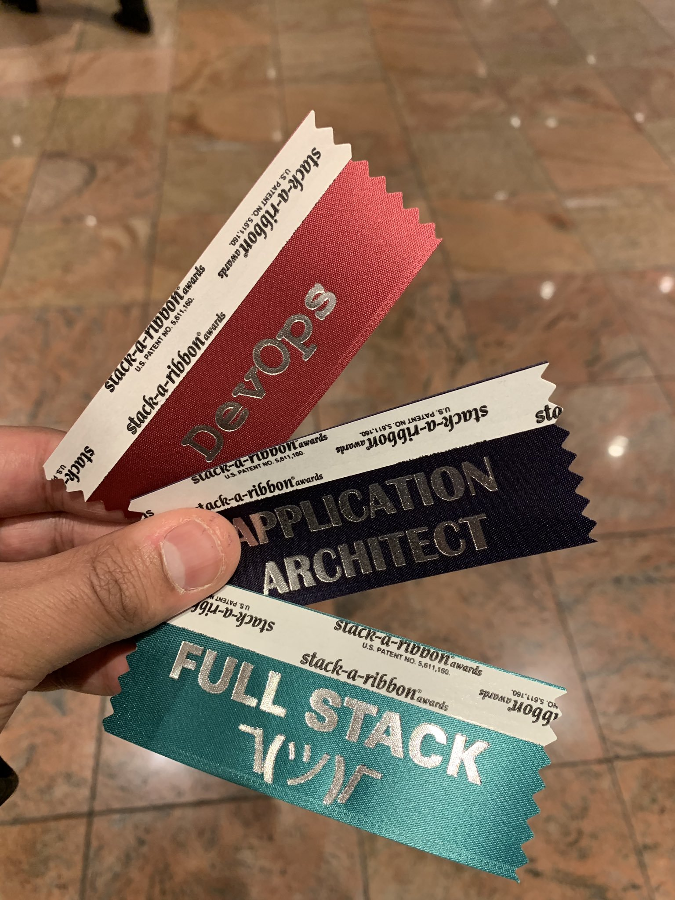

O'Reilly Software Architecture Conference 2019
./john
I wanted to summarize and share all of the notes and takeaways that I had from the O'Reilly Software Architecture Conference. Below are pretty much all of the notes I took while I was there.

Figure 1: It took me a long time to select which ribbons I wanted
1 Themes
- Tech skills are at most 50% of what's needed to succeed
- Tech specific obsessions is dangerous
- Architecture and technology aren't the same thing.
- Everything is code and the lessons of software need to be applied to the other domains.
- Security is a risk model like home insurance
- Everyone wants to be able to move faster. Everyone is talking about speed
- Layers are being broken down in favor of smaller units of
production
- Reducing meetings, coordiation accross teams is desirable
- Infrastructure teams need to have a product mindset where the customer is an internal team
- The absense of product thinking can lead to disasters. This was a theme in many talks
- The traditional role of the architect is more and less important at the same time. Less important because we're less able to centrally plan and design everything, but more important because everything is software… Architects are struggling to figure out how to remain relevant??
- Start with something simple (imperfect) and iterate it and improve
2 Architecting IT transformation
- https://conferences.oreilly.com/software-architecture/sa-ny/public/schedule/detail/74391
- https://twitter.com/praetorian/status/1092789318966489088
Architects have an image in their head something like "The Architect" like from the Matrix. But engineers might see architects more like senile, overpaid, out of touch people that can't code.
The role of the architect is to build connections between the "engine room" and the "penthouse". Basically, we need to connect the people actually doing stuff with the senior management.
In the old model, we used to be able to specify exactly what we want and build it. Then we would go into maintenance mode. With the new model, there is no specification. There is no steady state. We're always changing and moving forward. The idea reminds me of the idea of the vX. There is no well-defined, well-specified target that we're actually going to reach.
With the old model we were more concerned about specs, budgets and timelines. With the new model, we're going to speak more in relative terms like burn rate and cost per hour. The old model put us in a position where we need to "guess right" and the new model requires that we learn fast. The old model is really much more structural and we're moving to a world that's much more dynamic. In the old model, architects focused most on scale, but now the focus is more on speed.
One big change that the speaker mentioned is that as the world moves faster and faster, the benefits of a layered architecture decrease.
Further reading here: https://architectelevator.com/blog/
3 Career advice for architects
- https://conferences.oreilly.com/software-architecture/sa-ny/public/schedule/detail/72255
- https://twitter.com/praetorian/status/1092794465037758468
This was a brief presentation and she mostly talked about the skills that you need to be an architect. It was interesting that so few of the skills were technical in nature. She listed a few things out:
- Asking questions (and listening)
- Good communication skills
- Adaptability and being open minded
- Prioritization
- Tech Skills
She came up with an interesting metaphor as it related to tech skills. Upgrading your own tech skills is like buying a faster computer. But Ideally you want to go distributed which means training others. The fastest path to being 10x is to train 9 others.
In terms of training others she listed out a few things:
- Pair programming (this was her number 1)
- Community Support… Open source involvement
- Internal learning sessions
- Book Clubs
- Conferences
She really did emphasize the importance of pair programming. She also suggested an alternative for peole who don't really want to do a lot of pair programming which is mob programming. Pair programming for NxJ is actually a good fit because of TPs, but I've never really done it for more than a few hours.
The details of her talks in general are at https://bit.ly/careerFP
4 Beyond accidental architecture
- https://conferences.oreilly.com/software-architecture/sa-ny/public/schedule/detail/71774
- https://twitter.com/praetorian/status/1092815198686232576
- https://twitter.com/praetorian/status/1092829282156593153
"Accidental architecture" is the tendency of complex systems to degrade over time due to various reasons. The accidental architecture is an emergent phenomenon that occurs when we lose sight of the important stuff that went into the original architecture.
A very interesting distinction is that there is a difference between technology and architecture. Technology is more based on preference and architecture is focused on the important stuff for the business.
He had some cool ideas from other authors I think. In particular from Neal Ford: "Meta-work is more interesting than work. If there isn't a problem in front of us, we'll create one."
The idea is similar to concepts like navel gazing and pontification.
An interesting idea that this guy mentioned is that he rails against the hobbyist mindset. I.e. when engineers pick technologies because they think it will be cool and they're personally interested in it. I think it's situational, but I understand where he is coming from. I think the hobbyist mindset can be helpful to keep engineers interested, active and engaged.
He also reference this type of diagramming which might be easier for people to learn than traditional UML.
5 Building a service delivery infrastructure
- https://conferences.oreilly.com/software-architecture/sa-ny/public/schedule/detail/74523
- https://twitter.com/praetorian/status/1092856655346388992
- https://twitter.com/praetorian/status/1092856655346388992
- https://twitter.com/praetorian/status/1092861234666450944
I enjoyed this talk. Lots of good ideas.
One of the key ideas is that "service delivery" can be a "product" within the organization. We're organized around the idea of "release engineering" but the idea hasn't really worked well. But there is the idea that there is infrastructure needed to take code from development, and get it into production. That process should be thought of as a product.
The role of the "architect" has expanded greatly because everything is software now. The interesting thing is not that infrastructure people now need to code, but that infrastructure folks now can use the best practices from software: thin slicing, yagni, pairing, acceptance criteria, DDD, and TDD.
In their talk they mentioned this article that they wrote which interests me a lot: https://www.thoughtworks.com/insights/blog/fitness-function-driven-development
They also reference some of these IT spend number's. https://www.spiceworks.com/marketing/state-of-it/report/
They basically said that everything is code at all levels. The only part that can't be coded away is the CxO level stuff. And for that level they had some metrics in mind like:
- Evolvability
- Mean time to resolution
- Time to market
6 Security principles for the working architect
- https://conferences.oreilly.com/software-architecture/sa-ny/public/schedule/detail/71632
- https://twitter.com/praetorian/status/1092861234666450944
- https://twitter.com/praetorian/status/1092861234666450944
Security is our protection against 3 M's: Malice, Mistakes, and Mischance.
Traditionally, there has been a separation between security engineering and software engineering. In the gulf between the two, there is this desert of responsibility where no one wants to take responsibility for stuff.
For the most part, this presentation was a compilation of security principles. Nothing really earth shattering. I think tht being familiar with OWASP and NIST would be similar.
One of the interesting ideas that he did bring up was related to auditing. During the talk he really stressed the importance of being able to audit and went so far as to say if the audit fills up, the system should stop responding rather than losing the logs. I haven't really thought that much about this, but it's a helpful perspective.
Random, I had never heard of port knocking. It's a super interesting idea.
He also had an iterative approach for security which I liked. Threat model, find the weakest link, make it more secure, start over. It could be an interesting iteration loop for the security team at Next Jump to go into.
He showed this real time threat map to illustrate how much stuff is going on https://cybermap.kaspersky.com/
This was also a powerful illustration of the amount of data that's being lost https://informationisbeautiful.net/visualizations/worlds-biggest-data-breaches-hacks/
This is book and some reference materials https://www.viewpoints-and-perspectives.info
7 Challenges with reuse within a large and diverse engineering organization: A case study
- https://conferences.oreilly.com/software-architecture/sa-ny/public/schedule/detail/71572
- https://twitter.com/praetorian/status/1092861234666450944
The gist of this talk is that Capital One moved to microservices and AWS. In that journey they went from basically wild west anything goes to having standards of some kind.
They found that vertical teams have much better ownership compared to horizontal ones. Horizontal teams want to know the requirements and vertical teams want to add value and satisfy the customer needs.
"We don't make money by building more pipelines" This is a common refrain I think. Architects don't like technology for no good reason.
Capital One's journey is super interesting and instructive. They started with no rules and then had to rein it in. When they did rein it in, the focus was largely on their code pipelines and their processes for generating new skeletons.
8 Realigning DevOps practices to support microservices: A Capital One case study
- https://conferences.oreilly.com/software-architecture/sa-ny/public/schedule/detail/71960
- https://www.slideshare.net/secret/uNMEnkOb1QzZgH
The core premise I think of this talk was that microservices allow Capital One to move faster. They cited a lot of materials and books. They operate out of this need to follow regulations and they talk a lot about going to jail. E.g. if this doesn't follow the regulations someone goes to jail. So it's very important.
They talked a lot about the false choice of speed or quality. They invested alot in their code pipeline. Their code pipelines are the full release process including the various environments like dev, stage, pre-prod etc.
These guys also talked about reducing layers in order to speed things up which goes back to the inital keynote.
The idea of code pipelines as a product is super interesting because we could create various pipelines for different types of products with different quality requirements. I.e a FedRAMP pipeline, a PCI pipeline, a Sandbox Pipeline etc. These pipelines could have different processes in various situations. E.g. the PCI pipeline requires senior approval, but the general pipeline just requires a peer review.
9 Design and architecture: Special dumpster fire unit
- https://conferences.oreilly.com/software-architecture/sa-ny/public/schedule/detail/74392
- https://twitter.com/praetorian/status/1093152292524703745
The main themes of this particular talk are summarized pretty well in the tweet. There are some common threads that connect the big software failures from this guy's background. In particular:
- no incremental delivery
- arrogant architects
- big architecture up front
- operating in silo (no feedback)
- lack of product thinking
- overly focused on cool tech
The lack of "product" thinking seems to be a common pitfall for software teams. Another lens on this is that teams that are overly focused on tech and perfect solutions are doomed. It's not that different than how NxJ talks about stuff.
10 Design after Agile: How to succeed by trying less
- https://conferences.oreilly.com/software-architecture/sa-ny/public/schedule/detail/72241
- https://twitter.com/praetorian/status/1093158772569186304
The main theme of this talk is that planning is important. Agile emphasizes adaptability over planning and suffers because of this.
The basic thesis of this talk I think is that iteration and agile are limited. Without planning you can't really make big changes. E.g. you can't iterate your way from SVN to Git. You need planning. He also mentioned that design itself is agile because you can plan much faster than you can do. Doing the plan is an order of magnitude faster than building the wrong thing. I mostly agree, but it is situational. Planning for something that's very experimental and might be thrown away doesn't seem like a good idea.
He quoted Eisenhower: "Plans are useless, but planing is indispensable."
He referenced this particular talk.
He put a really big emphasis on diagrams and the c4 model of diagramming. UML is too strict in his view and ends up being distracting and causing people to think about the wrong things. C4 Model I guess is more opened ended and easier to use to convey information. He also advocated keeping version of the diagram in the code so that you can see how the diagrams evolve along with the code.
His teams focus a lot on writing very clear and detailed problem statements. They use prose as part of their design process. We've heard of other people doing stuff like this e.g. writing a press release before the development of your feature or product. It's also very similar to Amazon's ideas around creating powerful narratives in general.
11 Roaming free: The power of reading beyond your field
The main point of this talk was to encourage software architects to read books outside of the traditional realm of computer / technical books. Reading outside of our own fields exposes us to new ideas that can be useful within our own jobs.
He referenced this full Steve Jobs quote which gets at the same idea more or less:
Creativity is just connecting things. When you ask creative people how they did something, they feel a little guilty because they didn't really do it, they just saw something. It seemed obvious to them after a while. That's because they were able to connect experiences they've had and synthesize new things. And the reason they were able to do that was that they've had more experiences or they have thought more about their experiences than other people.
Unfortunately, that's too rare a commodity. A lot of people in our industry haven't had very diverse experiences. So they don't have enough dots to connect, and they end up with very linear solutions without a broad perspective on the problem. The broader one's understanding of the human experience, the better design we will have.
Beyond that, most of the talk a list of books or examples where software engineers came up with good ideas after being exposed to books or ideas outside of their own field.
One of the ideas that he mentioned came from the Marine's Warfighting book. Basically the idea is that in combat situations, the marines push autonomy down the org chart. It sounds like a very cool idea that I want to learn more about
There were two other ideas that he mentioned that I thought were interesting. One is the idea of Tacit vs Explicit knowledge. Some things can explicitly be taught. Other stuff has to be learned by doing. E.g. you can't really explain to someone how to ride a bike so that's tacit knowledge. This seems like a very useful distinction.
The other idea that he mentioned which seems very interesting is this Dreyfus model. The basic idea is that it's a pretty clear model for levels of skill:
| Skill Level/ Mental Function | Novice | Advance Beginner | Competence | Proficient | Master |
|---|---|---|---|---|---|
| Recollection | Non-Situational | Situational | Situational | Situational | Situational |
| Recognition | Decomposed | Decomposed | Holistic | Holistic | Holistic |
| Decision | Analytical | Analytical | Analytical | Intuitive | Intuitive |
| Awareness | Monitoring | Monitoring | Monitoring | Monitoring | Absorbed |
12 RESTful web microservices from the ground up
- https://conferences.oreilly.com/software-architecture/sa-ny/public/schedule/detail/71663
- https://twitter.com/praetorian/status/1093193020265193477
- https://twitter.com/praetorian/status/1093187898856349696
- https://twitter.com/praetorian/status/1093181375975428097
I enjoyed this talk. Some of the ideas were very "ivory tower" toward the end. But there were a lot of strong ideas throughout.
He talked about APIs as a landscape and documentation like Swgger is a way to map that landscape. His point of view is that APIs need to have a low barrier. You shouldn't have to jump through lots of hoops.
One idea that was interesting was that the Unix philosophy applies microservices. The high level principles and justifications are the same as ever. Another interesting justification of microservices is that they allow us to do a release without having a meeting.
In the old days of the monolith, the architect was the monarch. We don't have that anymore.
One of the books that was referenced in this talk a lot was "Release It". I think this could be a great basis for our own check list of an "Enterprise Service". The basic gist of it is that there are a few ideas that should be baked into the services that are critical for us:
- Failfast
- Timeouts
- Circuit Breakers
- Steady State
- Handshaking
- Bulkhead
I liked the way that he went on to breakdown various classes of microservices:
- Stateless Microservices
- Persistence Microservices
- Aggregator microsercices
He mentioned some classes of problems like affinity (when you start a transaction on a particular server and need to stay with that server for the duration) that I think are important, but he didn't talk much about solutions.
He made reference to this list (fallacies of distributed computing) which I thought was really helpful and I know we can make lots of mistakes related to this.
He also mentioned the idea of a saga which I'm pretty sure I didn't understand at the time. It's basically a transaction pattern for long running transactions. E.g. it's something we could be much more deliberate about in our cart infrastructure.
https://en.wikipedia.org/wiki/Compensating_transaction
The end of the presentation got theoretical where he talked about how there should be semantic meaning in our APIs. This means, that like the internet it should be possible to understand / comprehend an API that you've never seen before. He mentioned some standards for this.
13 Developing great architects: Creating the right environment for growth
This was a very straight foward for helpful talk. For the most part, the speaker talked about a bunch of programs that they've run within their company and gave insights from what worked and what didn't. He covered:
- Book Clubs
- Round Tables
- Training Sessions
- Hackathons
- Katas
- Shadowing
The thing I liked about the presentation is that he covered a bunch of things that they've actively tried or are doing currently. I think a lot of the ideas aren't particularly crazy, but it gives a solid starting point in terms software engineering development programs.
14 The well-rounded architect
- https://conferences.oreilly.com/software-architecture/sa-ny/public/schedule/detail/71796
- https://twitter.com/praetorian/status/1093237942854782976
- https://twitter.com/praetorian/status/1093232557385310208
- https://twitter.com/praetorian/status/1093230434950045697
I thought this was an interesting talk that covered basic theoretical models of what an architect is or should be. From his point of view, he described the architect as a role and not necessarily just a single person. In that role, it's also possible that more than one person is the architect or that there is no architect at all. The basic idea I think was that the architect helps shepherd the teams and helps them make the right choices.
He brought up the C4 Diagramming approach as well. It came up a few times while at this conference, so I feel like it could be something to add to our tech radar.
I tweeted the biggest punchlines I think from this particular talk, but basically he viewd that there were 6 dimensions for an architect and that when those dimensions are out of whack you end up with certain problematic balances. The main qualities are:
- Communicator
- Leader
- Strategic Technologist
- Entreprenuer
- System Focused
- Developer
There are 4 failure patterns when these dimension get out of balance:
- The Salesperson
- The Ivory Tower Architect
- The Tinkerer
- The ADD Architect
The only other idea that he talked about that was kind of interesting is that hey had an model of skill acquistion like the Dreyfus Model, but felt a little easier to understand and grasp.
- Just Starting
- Improving
- Capable
- Well Known
- Industry Leader
I'm not sure how important to is to be well-known. It's possible that you're well known, but not that capable. Does that matter?
15 7 years of DDD: Tackling complexity in large-scale marketing systems
- https://conferences.oreilly.com/software-architecture/sa-ny/public/schedule/detail/71366
- https://twitter.com/praetorian/status/1093278025154772993
This talk was really interesting because it covered the evolution of this particular architecture as they evolved in their business needs and understanding of Domain Driven Design. I'm not particularly familar with DDD so this was new territory for me, but it did get my very interested. Some of the keywords like ubiquitous language and bounded contexts seemed very powerful for designing some complicated systems.
I liked the breakdown of layers in a system that he had:
- Infrastructure
- Domain Model
- Service Layer
- Presentation Layer
He made an interesting point about how using stored procedures caused a big problem with their architecture at some point because it created and implicitly bound context between DBA and developers. Duplication was required and things could break down and get out of sync.
He used a term "distributed monolith" which was interesting. It's an good antipattern for us to keep in mind as we develop our microservice. Are we keeping true to the intent of microservices or have we developed a distributed monolith.